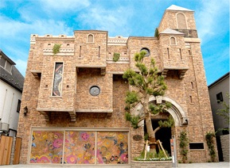
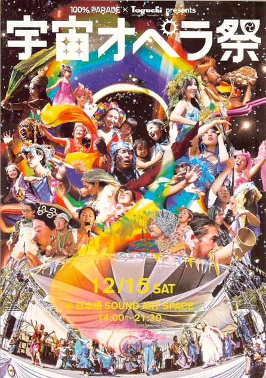
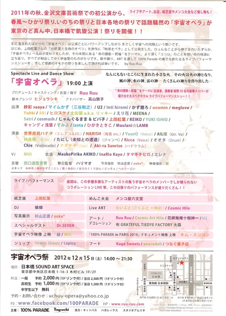

L'MANA Past LIVE 2012
５月６日 L'MANA（ラ・マナ） みらいまつり で ひさびさの LIVE します
この日は 日本中の原発が止まる日
そして５月の満月 しかも とても大きなスーパームーン の日です
みんなでお祝いしましょうね〜 . +
L'MANA LIVE TIME １５：３０〜 の予定です
以下 あだっちの日記からです
○５月５＆６日 みらいまつり １４時３０分〜１９時 （２０時頃閉店）
月が大接近スーパームーン６日に満月
http://karapaia.livedoor.biz/archives/52081326.html
なので終わったら夜空のお月様をみあげましょうー
A.C.T アートコンプレックス・センター
場所・http://www.gallerycomplex.com/
地下ホール
〒160-0015 東京都新宿区大京町12ー9
12-9, Daikyo-cho, Shinjuku-ku Tokyo
tel/fax: 03-3341-3253(2Fのギャラリー直通)
最寄駅 丸の内線・四谷三丁目駅、ＪＲ線・信濃町駅
料金カンパ制 ＆ドリンクオーダー 寄付募金箱ももっていきます（どこに寄付するか未定）
館内禁煙（１階に喫煙スペースあり）
エレベーターございます
１階にすてきなカフェレストランがあります
おもてにたむろしますと苦情がくるそうなのでご注意ください
企画・あだっち、協力・おかもっち、もしかしたら音彩酒房ムジカのしょうさん
出演
５日 こどもの日
阿利-ALI-（巫女系スーパーダンス）＆ADAcCHI（スピリチュアルヒーリングディジュ）
鮪magro（オリジナルジャズポップス）＋小日山拓也 ＋ ＶＪ
東京Ｍａｎｇａ（ハッピージャム・ポップスバンド／キーボード、ボーカル、口琴）
きたがわともき（エレキシタール）＆やまだまや（ベリーダンス）
http://ameblo.jp/kitagawatomoki/
シモン（パーカッション）＆ＤＪ Alah
せかい庶民ハナヲ(＠花族、弾き語り)
http://www.myspace.com/hanawomusic
sada （＠モンゴロイドスポット、ギターうた）
http://www.youtube.com/watch?v=dxJbhQj0JCg&feature=relmfu
６日 コロッケの日
国分寺エクスペリエンス（うた、ロック）
ナラカズヲ（フォーク＆ロック＆レゲエ）
http://www.youtube.com/watch?v=7utm_WNEg-A&feature=youtube_gdata_player
ゆめやえいこ（フォーク・オーガニックソング・山梨八ヶ岳在住）
http://www.geocities.jp/yumeyaeiko/
L`mana(民族楽器などのアンビエント・うた)
http://tengokukarano.goraikou.com/L'MANA/L%27MANA%20Profile.html
コヨーテ（ボイス）＆ADAcCHI（スピリチュアルヒーリングディジュ）
Momoko（ボサノバ、オリジナルソング）
http://homepage2.nifty.com/momocco/
敬神(ヒーリングピアノ)
他・・・？
お店
○占い＆ヒーリング
sudha sun unimondy （両日）
http://plaza.rakuten.co.jp/suncitrinestone/
○かたもみ
まきたん＠感謝（５日のみ）
○インスピレーション書道
北谷隆策（６日のみ）
http://www.geocities.jp/ryusaku328/
他・・・？
占い、手作り品などブース出店したい人募集中。机に限りがありますのでお早めに。広いので床で直でしたらけっこう何人でもはいれます。料金はとくになくカンパでお願いします。
※自動車でこられる場合は近くのコインパーキングでお願いします。会場はとめられません
☆

The Artcomplex Center of Tokyo
アートコンプレックス・センター


100%PARADE in 2012年度第９回ひかり祭り～共存～
8/4（土）旧牧郷小学校（神奈川県相模原市緑区牧野7029）
「地球オペラ」～八百万の神々の唄～
この前代未聞の放射能時代を生きる我々が、命の美しさ・尊さをARTを通して共有したい！発信したい！という想いのもと、上田紅葉さん原作の紙芝居を100%PARADEが舞台化したパフォーマンスショーです。流動可能・自由自在・夢幻宇宙ーどこまでタマシイの飛翔ができるのであろうかー。パンドラの箱のなかから最後に飛び出す希望のごとく、人をあるがままの美しい存在として甦らせてくれる
ひとつのおとぎばなしー。キラキラとまばゆいくらいの陶酔を、真夏の夜の夢のように、届けたいー！！100％Parade
初のライブパフォーマンスショーを楽しんでください。100%PARADEとは帽子ARTIST Ruu
Ruuの呼びかけに集まったクリエイターによる PARADE”です。
■ 原作 上田紅葉 紙芝居 “地球 愛と生命のオペラ”
■ プロデュース/キャスティング/衣装/帽子 Ruu Ruu http://ruuparade.exblog.jp/
■ 演出 マイムかず
■ 出演
○火の神 紗彩 http://s-saaya.jugem.jp/
○水の神 マイムかず
○風の神 AKI http://blog.goo.ne.jp/moongene
○火の子 Yuhki
uoomin
meglove
○水の子 U2 http://www.gaku-ajito.info/
Inti hiromi
MEENA http://tengokukarano.goraikou.com/GODSGARDEN/
○雷の神 さんた
○山の神 ヒロスケ
○雲の神 キャンディ浅葉 http://www.bunko-art.org/
○海の神 ヨシコ
○川の神 yukiko
○木の神 Satri http://satri.jp/
○木の葉 柊アリス http://mondomilch.com
○花＆花の子 じゃんぐるまま＆ビバ子 http://ameblo.jp/junglemama/
○極楽鳥 YUKI ISHIO http://www.shantishanti.jp
○蝶 sango http://ameblo.jp/sango369/
○海草 Maulani☆LAMB
○人魚 李 素福 http://ameblo.jp/hug-the-earth/
■ 音楽監督 世界庶民ハナヲ http://www.voiceblog.jp/fiori/
■ ナレーション YuucO
■ 音楽 HARISH http://tengokukarano.goraikou.com/GODSGARDEN/
YuucO
AILIE
林圭樹
Aki-ra Sunrise http://aki-rasunrise.com/
たにし（未知との遭遇）
東京月桃三味線×和太鼓RYOJIN http://tokyo-ghetto-shamisen.com/
■ 美術 黄色い熊さん
MUI（AYASUMAI） https://twitter.com/Ayasumai
ごくぶと http://www.nande-nande.com
砂田夢草
■ キャンドル まさ http://g-becks.com/candle/
■ 写真撮影 青木優佳 http://www.facebook.com/yuka.aoki.94
杉山正直(SHOWJIKI) http://sugiyama-masanao.com/
■ 映像撮影 結
ハル
■ 衣装 MaukoPirika AKIKO http://ameblo.jp/mauko-pirika/
InaRio Kayo http://inario.exblog.jp/
タマキチヒロ http://www.elvic.joyeuxjoel.com/
Cosmic Hilo（Art & Body LAPICA） http://lapica.exblog.jp/
奥村かずこ
■ スタッフ Haji http://yuruyuruearth.jimdo.com/
リュウジュ
Q
☆

いのちの祭り2012リンク↑
100%PARADE「地球(宇宙)オペラ」～八百万の神々の唄～
富士の麓 朝霧高原 ふもとっぱら にて
うたい、かなで、おどる。
命、喜び広がる時をすごしました
いのちの祭りをプロデュースしてくれた皆々様
それを支えてくれたスタッフの皆々様
あらゆるジャンルのアーティストの皆々様
そして集まってくれた皆々様
ありがとうございました！！！
☆
100%PARADE 地球オペラ 及び 宇宙オペラには L’MANAではなく”MEENA” “HARISH”で参加しています。
100%PARADE 地球オペラ 及び 宇宙オペラには L’MANAではなく”MEENA” “HARISH”で参加しています。


100%PARADE 地球オペラ及び宇宙オペラは、MEENA, HARISHで参加しています。
今回は、L’MANAでのLIVEもする予定です。
☆
“春風” が吹き 夏 ”光” あふれ 秋には ”いのち” 輝き 冬に感謝を”祭”捧げる。
宇宙の大いなる源と 内なる喜び が ひとつとなって
歌い 奏で 踊る 魂達
命の生まれた源に 感謝を捧げ 今 そこへと還る
街の”PARADE”から”地球オペラ”へ そして高まり”宇宙オペラ”へ
魂達は100% 高まってゆく
場所
日本橋 SOUND ART SPACE
東京都中央区日本橋1-16-3 木村ビル1F/2F
日時
2012年12月15日(土) 14:00 〜 21:30
料金
一般
予約2,000円(1ドリンク付)
当日 2,500円(1ドリンク付)
高校生
予約1,000円(1ドリンク付)
当日 1,500円(1ドリンク付)
中学生以下
無料
予約 お問い合わせ
リンク
HP
宇宙オペラ WEB CM
100%PARADE × 田口造形音響 Presents
Ruuを中心に みんなが楽しみながら
自由な中で作り上げてきた宇宙オペラ
今度は東京のど真ん中で、初の自主公演
今までのイベント参加とは違う
思いっきり自前のイベントに
みんな張り切っています。
素敵な時を共にしながら
命の大切さを感じ、愛の輪を広げ
自由を喜び舞い上がり
感謝とともに歌い奏で踊っていく
そんな祭りに
皆さん遊びにきてください。